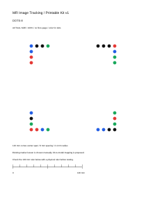

Six target sheets, A4 or US Letter. Print actual size / 100% and measure the100mm ruler. ArUco:120mm outer black square. Dots:120mm corner-center span (not card edge);140mm field.
Download A4 PDF · Download US Letter PDF
Download actual-size page SVG · Target manifest · Instructions and PDF generation
Existing marker mode by source contract; live stereo/printed-paper acceptance pending. Current lesson is selected manually. Natural-image exercise is not registered in the native app. Crop the white field for the negative control.
